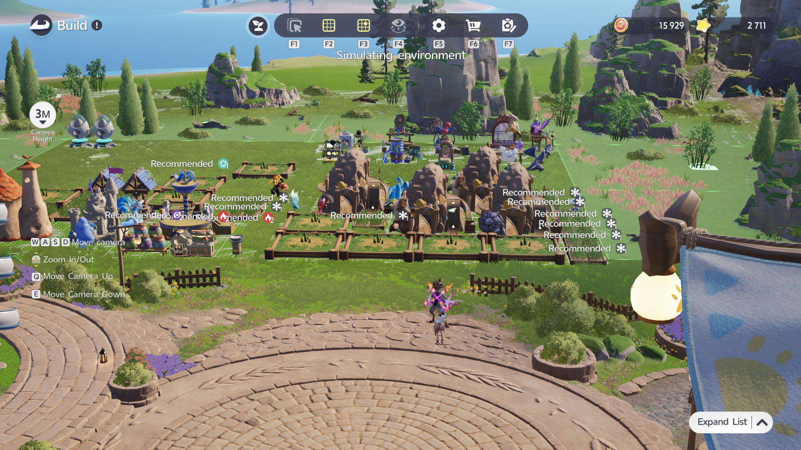

01 FARMLAND 16 plots
02 MINES 4 plots
03 PRODUCTION one back row
04 UTILITIES outer edge
05 WOODLAND 8 plots
PRODUCTION ZONE · MVP
Build less.
Produce more.
A focused layout companion for Aniimo Homeland production. Choose your RV, switch decoration density, and keep every zone readable.
01 / CONFIGURECOMMUNITY MAX · RV20
OPTIMIZATIONPRODUCTION FIRSTShort routes · clear zones · no invented output math
02 / LAYOUT
RV8 · No Decoration
VERIFIED CORE
DATA PENDING
RV7 is ready for verified data.
This level remains selectable by design, but layout counts are not guessed. Add a verified record to the JSON schema to activate it.
COPY THIS LAYOUTBUILD ORDER
- 01Make the crop block. Keep the farm plots together along the front and left of the work area.
- 02Pack mines in the middle. Use a compact cluster instead of scattering them across the zone.
- 03Run machines across the back. Keep production stations in one readable row behind the mine cluster.
- 04Push utilities to the edge. Wells and supporting stations stay reachable without cutting the main path.
- 05Leave a hauling lane. Preserve the front-to-back route shown by the callout so workers do not weave through every block.
Use the image first
The numbered callouts point to visible groups in the supplied production screenshot, so this is a copyable arrangement—not a decorative zone diagram.
RV8 reference
RV8 uses the screenshot as its visual source. Counts come from the selected data record.
Protect every tile
The no-decoration variant reserves the functional footprint and access lanes.
03 / WORKFORCE
RV8 Aniimo crew
COMMUNITY GUIDE
18/24
Aniimo assigned by the production-first RV8 plan.
COMMUNITY OPTIMIZER · NOT AN OFFICIAL LIMITABILITY PRIORITYTYPE / JOB
Choose the exact Aniimo form by its Homeland Ability. Element alone does not guarantee the job.
FIELD COREFACILITY / LATER
PERSONALITY MATCHAbility first.
Ability first.
Personality second.
A matching personality letter improves work efficiency at its named facility by 20%. It does not replace the facility’s required ability.
04 / REFERENCE
Your RV8, not a stock farm.
Facility clustering, mines, crop plots and active production workers.

The same working area from the entrance, with recommended worker markers visible.
05 / DATAFuture updates,
Future updates,
without rewrites.
game-data.jsonEDITABLE
{
"rvLevel": 8,
"verification": "verified",
"zones": {
"farmland": 18,
"woodland": 9,
"mines": 4,
"production": 22,
"utilities": 4
}
}Unknown means null. The interface never turns missing data into fake mechanics.